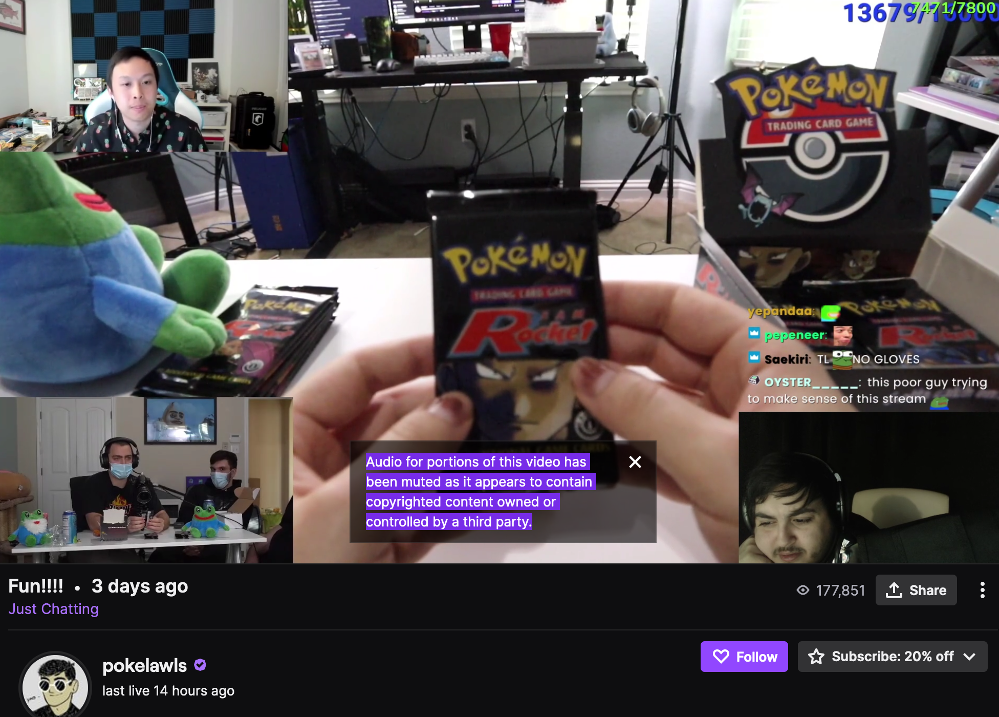
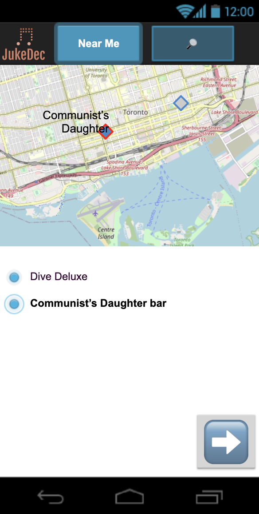
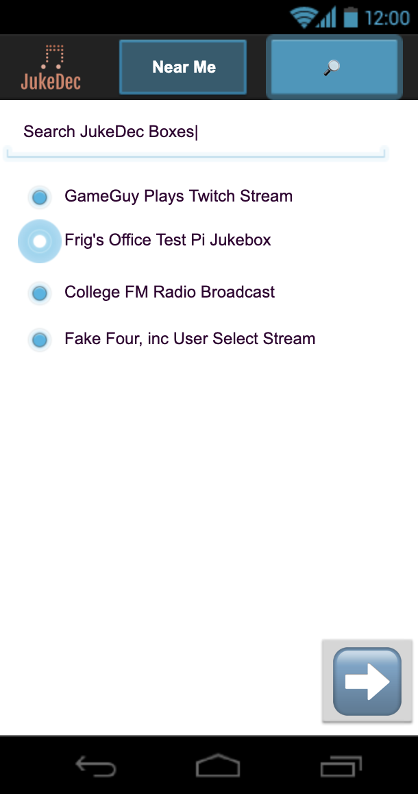
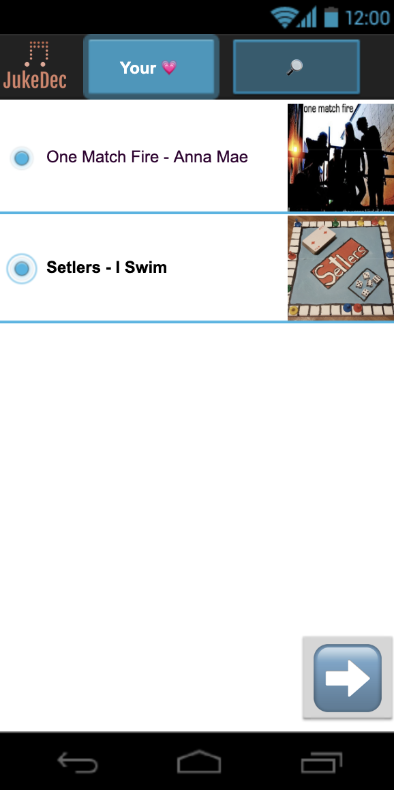
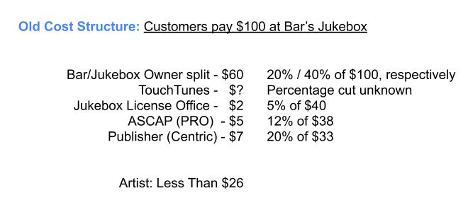
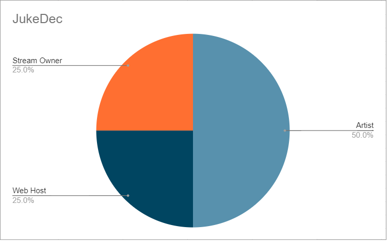

PR is a legal licensing term that applies to playing a music recording in public place
Streamers' DMCA
Problem: Example

Solution
People will pay for others to get others to listen to their music
Jukedec Services - High Level
Jukedec.org (Administration)
Issues Tokens
Maintains records of
Host/Publisher instances
Venue/Stream instances
Jukedec.com (Host/Publisher)
Indie record labels can become their own hosts and publishers
Audio stream software (Venue/Stream)
Twitch streamers client
Economy Hardware in physical venue
Jukedec End-User web app (PWA)
Demotime



Existing Alternatives
TouchTunes: Brick and Mortar Jukebox Service
PROs (Performance Rights Organization)
Every country has at least one.


Unique Value Prop
Unique Service: No other service pays a Twitch streamer for the music they play.
Key Metrics
Jukebox Instance Installations
Unique Artists in federated database
PWA App Installation
Registered Venues
Plays
Unfair Advantage
Eliminates all middle-men
Channels
Music & Industry Blogs
Twitch Streamer Outreach
Artist Adopters
Can share their music while retaining a sense of style and individuality.
Powered by communities, empowered by the art.
Holds monetary compensation accountable to where it matters.
Jukedec Team
figginGlorious
Server Admin
Product Engineer
Grinder
Database Engineer
API Implementation
Jukedec
Jukebox, Decentralized
presented by
@frigginGlorious
for
Blockhack Global 2020
## Purpose of the talk
- I like the idea of controlling our own livelihoods
- Strong feelings against corporate world and money in general
- Are there any students here?
- I'm NOT a professional consultant
- Any interest?